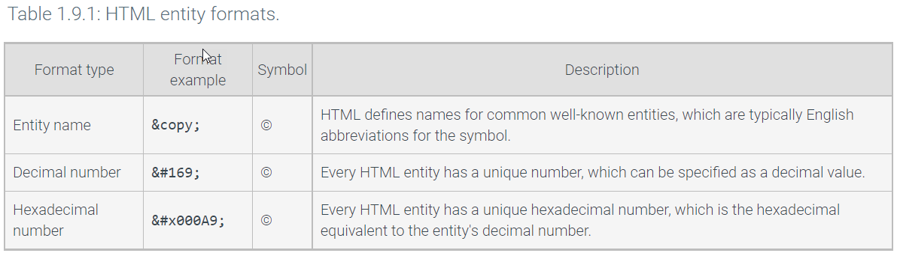
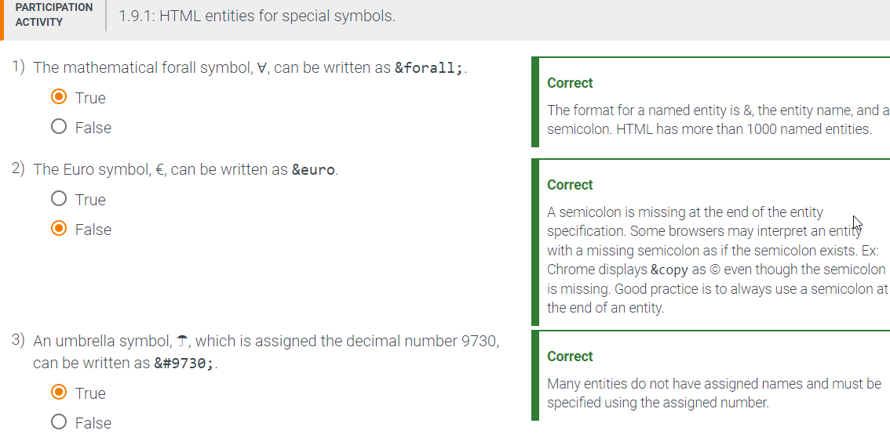
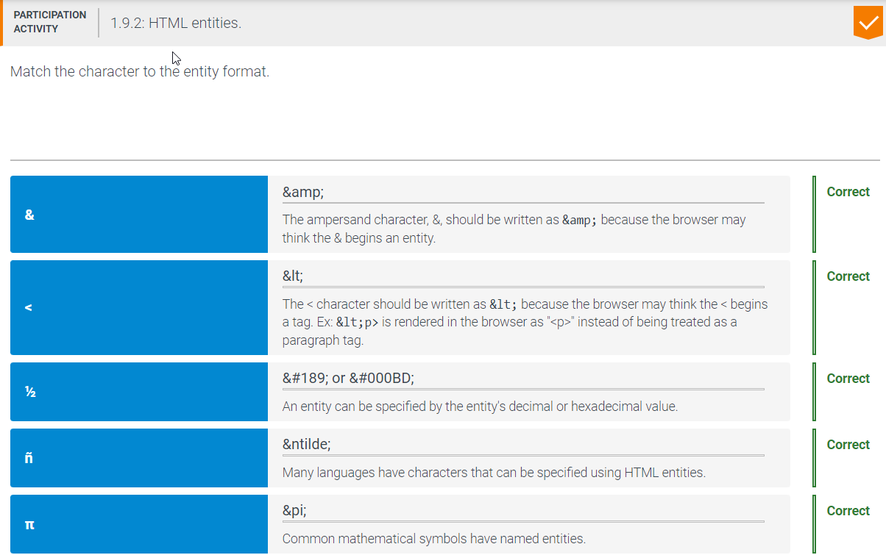
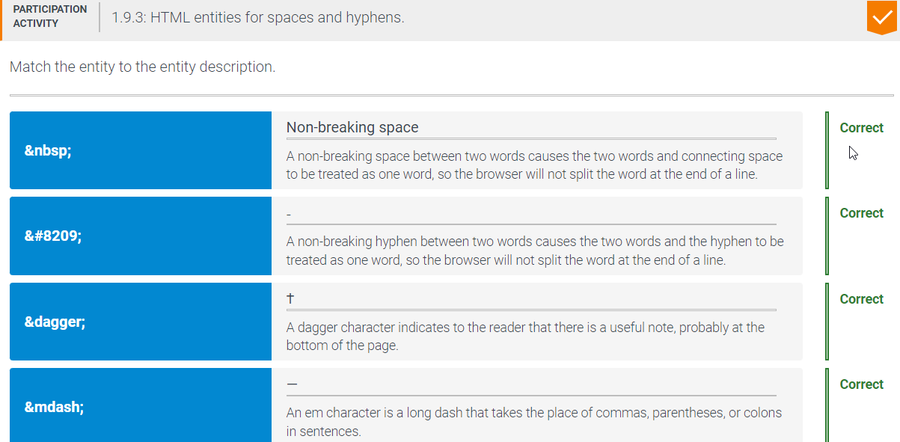

Entities
An entity is a mechanism for writing special characters or symbols in HTML, such as mathematical symbols, characters in most languages, and many other symbols. Many HTML entities can be specified by name. However, some entities do not have a name and can instead be specified using a decimal or hexadecimal number as shown in the table below.

∀
☂

Entities for Reserved Characters
The < and & characters can be displayed using entities. The < character normally marks the beginning of a tag, so < is used to display the <character when it is not part of a tag. The & character marks the beginning of an entity name, so & is used to display the & character when & does not start an entity name.
If the browser detects that < is being used without a tag or if & is being used without an entity, the browser will likely display the < or & characters. Ex: The HTML 2 < 3 & 4 will usually display 2 < 3 & 4 without using entities. Good practice is to use < and & instead of relying on the browser to determine the HTML author's intention. Ex: 2 < 3 & 4.

Non breaking characters
A web browser sometimes wraps a line — called wrapping or breaking the line — at an inconvenient location. For instance, when specifying a measurement range such 2-2.5", all the characters should be kept together when displayed. However, the browser may split the character sequence if the characters occur at the end of a line, with 2- appearing at the end of one line and 2.5" appearing at the beginning of the next line.
A non-breaking character is an inter-word character that permits treating the words on both sides to be one word. A non-breaking hyphen, ‑, looks like a regular hyphen but acts like a normal character in the middle of a word. Ex: off‑campus displays "off‑campus" on the same line. A non-breaking space, , looks like a single space but acts like a normal character in the middle of a word. Ex: 5 km displays "5 km" on the same line. The non-breaking space is also useful for displaying more than one space between words. Ex: Abe Lincoln displays "Abe Lincoln" with 3 spaces between Abe and Lincoln.

Table of all known HTML entities from W3 Consortium